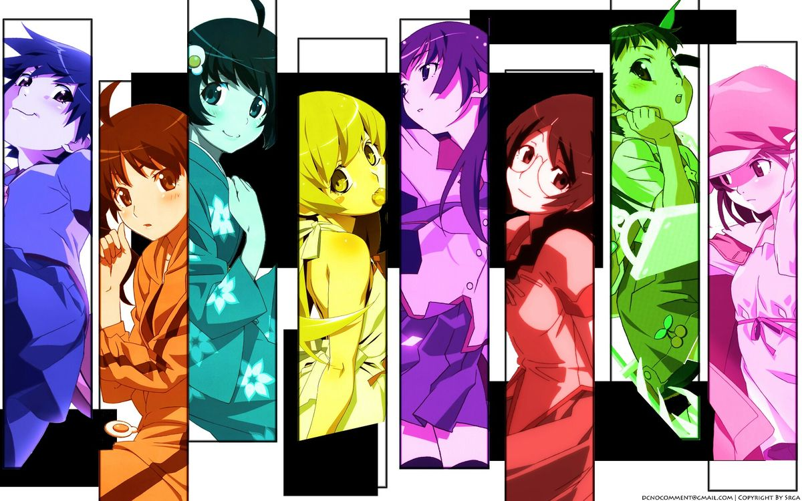

¿QUE SON LOS ANIMES?
Los animes son producciones animadas originarias de Japón que se han convertido en una de las formas de entretenimiento más populares a nivel mundial. A diferencia de la animación occidental, los animes destacan por su estilo artístico distintivo, el uso expresivo de emociones y una gran variedad de temáticas. Estas obras pueden estar basadas en mangas, novelas ligeras o videojuegos, aunque muchas son creaciones originales. El anime puede presentarse en formato de series, películas o especiales, y suele verse acompañado de una banda sonora cuidadosamente diseñada.
El universo del anime es tan amplio como diverso. Existen animes dirigidos a niños (kodomo), adolescentes (shōnen y shōjo) y adultos (seinen y josei), cubriendo géneros que van desde la acción, el drama y el romance, hasta la comedia, el terror y la ciencia ficción. Series como *Dragon Ball*, *One Piece*, *Death Note* o *Neon Genesis Evangelion* han tenido un impacto global. Más allá del entretenimiento, el anime permite explorar valores culturales, dilemas éticos, emociones profundas y aspectos filosóficos, haciendo de esta forma de arte algo más que simples dibujos animados.